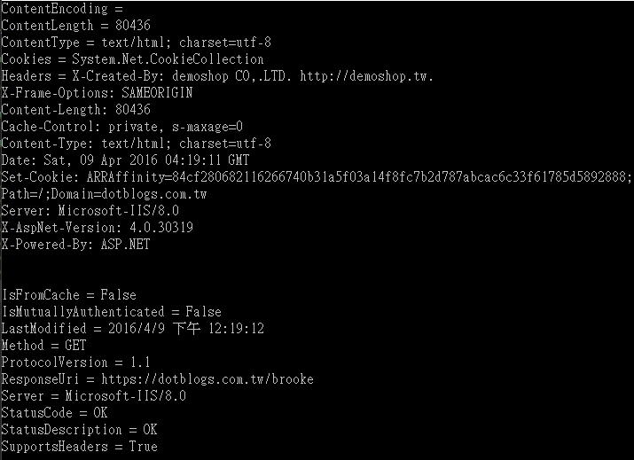

HttpWebResponse類別 屬性演示
HttpWebResponse的屬性為
| 名稱 | 描述 |
| CharacterSet | 取得回應的字元集。 |
| ContentEncoding | 取得用來將回應主體編碼的方法。 |
| ContentLength | 取得由要求傳回的內容長度。(覆寫 WebResponse.ContentLength。) |
| ContentType | 取得回應的內容類型。(覆寫 WebResponse.ContentType。) |
| Cookies | 取得或設定與這個回應關聯的 Cookie。 |
| Headers | 取得與伺服器的這個回應關聯的標頭。(覆寫 WebResponse.Headers。) |
| IsFromCache | 取得 Boolean 值，指出這個回應是否從快取中取得。(繼承自 WebResponse。) |
| IsMutuallyAuthenticated | 取得 Boolean 值，指出用戶端和伺服器是否都已驗證。(覆寫WebResponse.IsMutuallyAuthenticated。) |
| LastModified | 取得最近修改回應內容的日期和時間。 |
| Method | 取得用來傳回回應的方法。 |
| ProtocolVersion | 取得回應使用的 HTTP 通訊協定版本。 |
| ResponseUri | 取得回應要求之網際網路資源的 URI。(覆寫 WebResponse.ResponseUri。) |
| Server | 取得傳送回應的伺服器名稱。 |
| StatusCode | 取得回應的狀態。 |
| StatusDescription | 取得隨回應傳回的狀態描述。 |
| SupportsHeaders | 取得指出是否支援標頭的值。(覆寫 WebResponse.SupportsHeaders。) |
實際範例展示
using System;
using System.Collections.Generic;
using System.Linq;
using System.Text;
using System.Threading.Tasks;
using System.Net;
namespace ConsoleApplication1
{
class Program
{
static void Main(string[] args)
{
HttpWebRequest HttpWebRequest = HttpWebRequest.CreateHttp("https://dotblogs.com.tw/brooke");
HttpWebResponse HttpWebResponse = (HttpWebResponse)HttpWebRequest.GetResponse();
Console.WriteLine("CharacterSet = " + HttpWebResponse.CharacterSet);
Console.WriteLine("ContentEncoding = " + HttpWebResponse.ContentEncoding);
Console.WriteLine("ContentLength = " + HttpWebResponse.ContentLength);
Console.WriteLine("ContentType = " + HttpWebResponse.ContentType);
Console.WriteLine("Cookies = " + HttpWebResponse.Cookies);
Console.WriteLine("Headers = " + HttpWebResponse.Headers);
Console.WriteLine("IsFromCache = " + HttpWebResponse.IsFromCache);
Console.WriteLine("IsMutuallyAuthenticated = " + HttpWebResponse.IsMutuallyAuthenticated);
Console.WriteLine("LastModified = " + HttpWebResponse.LastModified);
Console.WriteLine("Method = " + HttpWebResponse.Method);
Console.WriteLine("ProtocolVersion = " + HttpWebResponse.ProtocolVersion);
Console.WriteLine("ResponseUri = " + HttpWebResponse.ResponseUri);
Console.WriteLine("Server = " + HttpWebResponse.Server);
Console.WriteLine("StatusCode = " + HttpWebResponse.StatusCode);
Console.WriteLine("StatusDescription = " + HttpWebResponse.StatusDescription);
Console.WriteLine("SupportsHeaders = " + HttpWebResponse.SupportsHeaders);
Console.ReadKey();
}
}
}

參考資料：